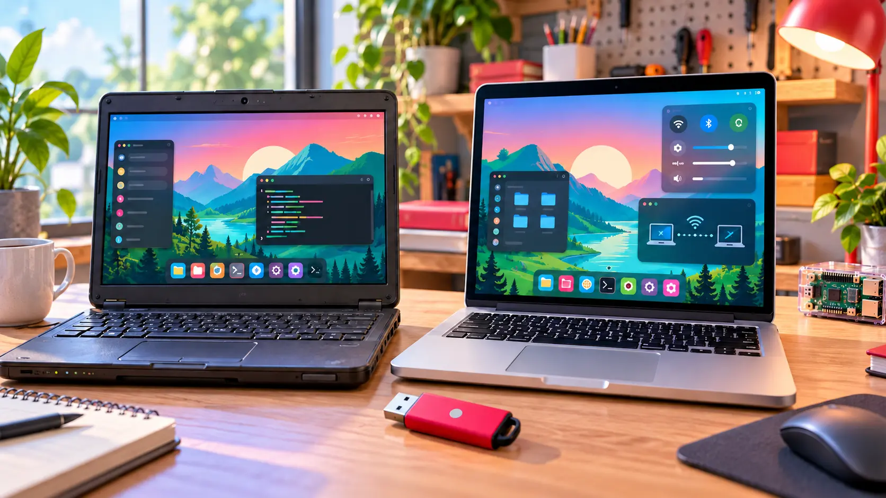

Computers · Field note 018
Raspberry Pi gives aging PCs and Intel Macs a fresh desktop
The long-awaited release moves to 64-bit Debian Trixie, adopts Raspberry Pi’s newest interface, and adds remote access through Raspberry Pi Connect.

Raspberry Pi’s desktop is stepping outside the tiny computer again.
After years without a current release, Raspberry Pi Desktop for PC and Mac has been rebuilt on Debian Trixie and is available to download. It brings the visual character and lightweight software environment of Raspberry Pi OS to conventional computers without requiring Raspberry Pi hardware.
The return closes a long gap. Raspberry Pi first adapted its desktop for PCs and Macs in 2016, followed by an installable edition in 2017. Later versions reached Debian Buster and Bullseye, but limited engineering time left the non-Pi edition behind while demand continued.
A modern base for older hardware
The new release moves from the old 32-bit foundation to 64-bit Debian for the amd64 architecture. Raspberry Pi says most PCs made during roughly the past 15 years should be capable of running it, along with many Intel-based Macs.
That architecture change also draws a clear line around Mac compatibility. Modern Macs using Apple Silicon are not supported because Debian’s work on that hardware is still considered experimental. This release is aimed at Intel-era Macs rather than Apple’s current M-series machines.
On supported hardware, users get Raspberry Pi’s latest desktop design, including its newer dock and Control Centre. The result should feel familiar to current Raspberry Pi OS users while giving older computers a cleaner, lighter alternative to their original operating systems.
Connect joins the desktop
Raspberry Pi Connect is included, allowing the computer to sit beside Raspberry Pi boards in the same remote-access dashboard. Users can open a shared desktop session or remote terminal through the service. A PC or Mac must be given a name during setup because it does not provide the unique hardware identifier available on a Raspberry Pi.
The operating system arrives as a live Debian image that can be flashed to a USB drive. Persistence can save changes back to the drive, or users can reset it to a clean state. Those ready to commit can launch the Calamares installer and place the system on the computer’s internal hard drive or SSD.
Raspberry Pi Desktop will not turn every old computer into a modern powerhouse. It does offer something increasingly rare: a current, approachable operating system designed to make useful hardware feel useful again.